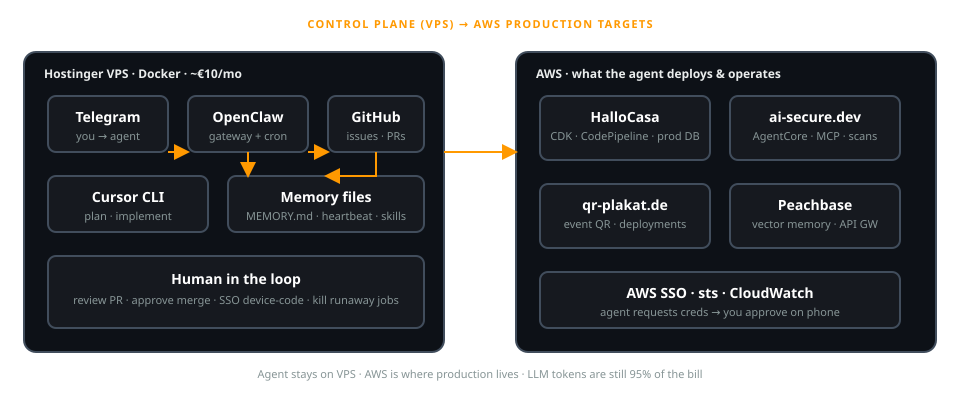

15 September 2026 · Kosmos Berlin · Germany
Serverless AI Factory:
An Autonomous Dev Pipeline on AWS
GitHub issue → plan → code → PR · fully autonomous · scale-to-zero
Martin Mueller
AWS Community Builder · martinmueller.dev
Agenda
~30 minutes
- What is the Serverless AI Factory?
- Autonomous dev pipeline flow
- AWS architecture — EventBridge, Lambda, Step Functions
- Multi-agent memory on stateless infra
- Why serverless for bursty agent workloads
- War stories & failure modes
- Economics — infra vs LLM tokens
- Live demo — issue to merged PR
Serverless AI Factory
Not a chatbot. A dev pipeline.
- Watches GitHub issues — not Telegram, not email
- Plans the work, writes code, opens pull requests
- Runs on scale-to-zero AWS — agents on demand
- Production for months · dozens of issues processed autonomously
Different talk: OpenClaw VPS → serverless migration (personal agent, heartbeats, Telegram).
Hook
What if your dev pipeline never slept?
- GitHub issue arrives at 2am
- Agent plans, codes, opens PR — no human in the loop
- Runs on serverless: spin up, work, scale to zero
- What could go wrong? (spoiler: a lot)
Overview
Autonomous dev pipeline
Trigger
GitHub issue webhook → API Gateway
Agents
Plan → implement → test → open PR
Orchestration
EventBridge routing · Step Functions >15 min
AWS stack
Lambda · DynamoDB · vector store · CDK
Pipeline flow
TODO: real git history screenshot
Architecture
Event-driven & serverless

API Gateway → EventBridge → Lambda → Step Functions
Key components
- API Gateway — GitHub issue webhook ingress
- EventBridge — event routing & scheduling
- Lambda — agent compute per turn
- Step Functions — workflows >15 min
- DynamoDB + vector DB — memory across invocations
Dev pipeline agents
- Plan agent — reasoning model breaks issue into steps
- Code agent — implements, runs tests, fixes failures
- Review agent — sanity check before PR
- Each agent = ephemeral Lambda invocation · scale to zero when idle
Memory on stateless infra
- DynamoDB — run state, handoffs between agents
- Vector store — repo context, prior fixes, embeddings
- Cold start vs. context loading — the real latency trade-off
- Step Functions when agent workflows exceed Lambda 15 min limit
Why serverless?
Bursty by nature
Agent workloads
Issue in → 3 min intense work → idle
VPS alternative
€10/mo fixed, 95% idle
Serverless win
Pay per invocation · scale to zero
Caveat
LLM tokens dwarf infra either way
War stories
Where it breaks
- Cold start vs. context loading — real latency bottleneck
- Stateful memory on stateless infra
- Multi-agent coordination across invocations
Failure modes
- Circular agent loops
- Runaway token spend
- Hallucinated git commands
- Debugging across CloudWatch log groups
TODO: anonymized incident examples
Economics
Real numbers
~€2–4
AWS infra / month
~95%
LLM token costs
TODO: sanitized bill breakdown chart
Live demo
Issue → merged PR in <5 min
- 1. Create GitHub issue
- 2. Webhook triggers agent pipeline
- 3. Agent plans + implements
- 4. PR opened — trace in CloudWatch
Fallback: pre-recorded demo clip if live fails
Takeaways
When to build a Serverless AI Factory
✓ Do
- Bursty, async workloads
- Issue-driven automation
- Burst economics over idle servers
✗ Don't
- Persistent WebSockets
- Long-lived browser sessions
- Real-time sub-second latency
Questions?
Martin Mueller
martinmueller.dev
github.com/mmuller88 · linkedin.com/in/martinmueller88